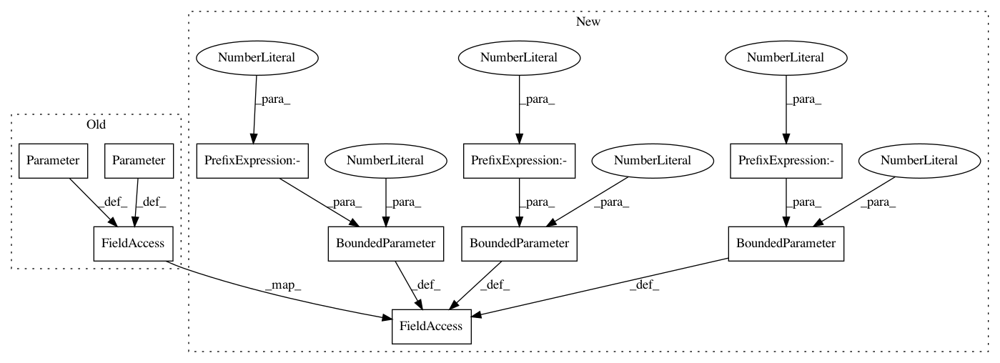

20c65469fe1e090f4d51322178655c7253b85e93,test/examples/spectral_mixture_gp_regression_test.py,SpectralMixtureGPModel,__init__,#SpectralMixtureGPModel#,24
Before Change
super(SpectralMixtureGPModel, self).__init__(GaussianLikelihood())
self.mean_module = ConstantMean()
self.covar_module = SpectralMixtureKernel()
self.params = MLEParameterGroup(
log_noise=Parameter(torch.Tensor([-2])),
log_mixture_weights=Parameter(torch.zeros(3)),
log_mixture_means=Parameter(torch.zeros(3)),
log_mixture_scales=Parameter(torch.zeros(3))
)
def forward(self, x):
mean_x = self.mean_module(x, constant=Variable(torch.Tensor([0])))
After Change
super(SpectralMixtureGPModel, self).__init__(GaussianLikelihood())
self.mean_module = ConstantMean()
self.covar_module = SpectralMixtureKernel()
self.params = MLEParameterGroup(
log_noise=BoundedParameter(torch.Tensor([-2]),-15,15),
log_mixture_weights=BoundedParameter(torch.zeros(3),-15,15),
log_mixture_means=BoundedParameter(torch.zeros(3),-15,15),
log_mixture_scales=BoundedParameter(torch.zeros(3),-15,15)
)
def forward(self, x):
mean_x = self.mean_module(x, constant=Variable(torch.Tensor([0])))
In pattern: SUPERPATTERN
Frequency: 3
Non-data size: 10
Instances
Project Name: cornellius-gp/gpytorch
Commit Name: 20c65469fe1e090f4d51322178655c7253b85e93
Time: 2017-07-18
Author: jrg365@cornell.edu
File Name: test/examples/spectral_mixture_gp_regression_test.py
Class Name: SpectralMixtureGPModel
Method Name: __init__
Project Name: cornellius-gp/gpytorch
Commit Name: 20c65469fe1e090f4d51322178655c7253b85e93
Time: 2017-07-18
Author: jrg365@cornell.edu
File Name: test/examples/latent_multitask_gp_regression_test.py
Class Name: LatentMultitaskGPModel
Method Name: __init__
Project Name: cornellius-gp/gpytorch
Commit Name: 20c65469fe1e090f4d51322178655c7253b85e93
Time: 2017-07-18
Author: jrg365@cornell.edu
File Name: test/examples/simple_gp_regression_test.py
Class Name: ExactGPObservationModel
Method Name: __init__